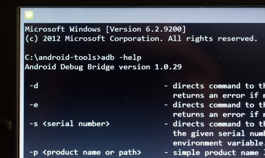
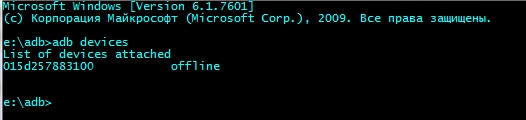
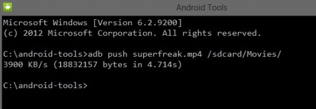
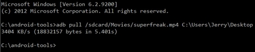
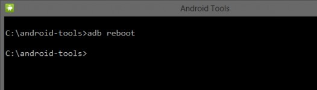
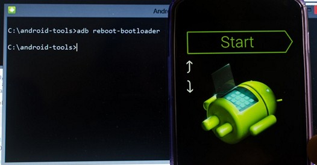
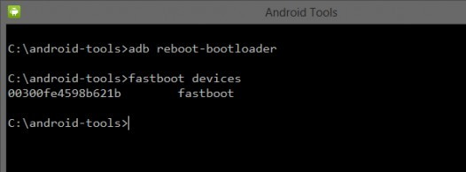
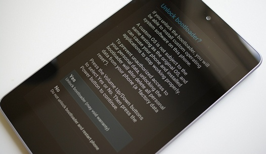
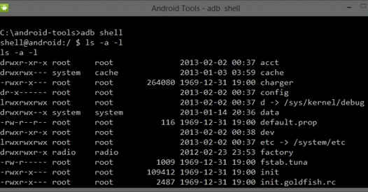
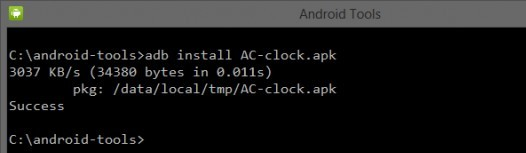

Изучаем Android. Десять основных команд ADB и fastboot, которые вы должны знать
Многие из вас не раз сталкивались с ситуацией, когда для получения root прав на Android планшете или смартфоне, установки новой прошивки, восстановления системы и прочих вещей, нужно было подключать его к компьютеру и выполнять ряд команд adb или fastboot, через окно командной строки (терминала).

Большинство вводят эти команды, не понимая, что они означают, просто следуя найденной в сети инструкции. И если вы хотите получить более полное представление о том, что происходит при их выполнении, то сегодня мы познакомимся с десяткой основных команд, которые должен знать каждый продвинутый пользователь Android.
Но перед тем как чем начать ознакомление с этими командами, напомню, что прежде чем ваш планшет или смартфон смог их выполнять, вы должны позаботиться, чтобы на вашем компьютере был установлен Android SDK, а на самом планшете или смартфоне, в меню его настроек была включена опция «Отладка USB».
Как установить Android SDK, содержащий в себе программы adb и fastboot, читайте в этом материале.
Также напомню, что в Android 4.2 и выше, пункт «Отладка USB» скрыт. Вот как включается раздел настроек для разработчика, в котором будет пункт "Отладка по USB":
Как включить отладку по USB в планшете Samsung SM-T3110 Galaxy Tab 3 8.0? Планшет Samsung SM-T3110 Galaxy Tab 3 8.0?
Как включить отладку по USB?
Нажмите Настройки> Об устройстве> тапнуть 8 раз подряд по пункту номер сборки.
Появиться меню для разработчиков.
В этом меню выбираем пункт "Отладка по USB", ставим галку напротив.
Для тех, кто забыл, как запустить окно командной строки в Windows напомню, что проще всего это сделать, нажав на «Пуск», после чего в окне поиска нужно будет ввести cmd и нажать клавишу «Enter».
После того, как все подготовительные работы закончены, можно подключать устройство к компьютеру с помощью USB кабеля и приступать к изучению команд.
1. Команда adb devices
Это, наверное, самая главная из всех десяти команд, о которых будет идти речь. С помощью неё мы можем узнать, видит ли компьютер ваше Android устройство, и если видит, то может ли он общаться с ним через команды терминала.
Если все нормально, то после ввода команды adb devices в окне командной строки Windows или терминала Linux, вы должны увидеть строку с текстом List of devices attached, после которой будет строка, состоящяя из серийного номера вашего устройства и его состояния - offline или online:

Состояние offline означает, что устройство находится в спящем режиме. Состояние online сигнализирует о том, что планшет или смартфон готов выполнять ваши команды.
2. Команда adb push
С помощью команды adb push вы можете копировать файлы на свой планшет или смартфон. При этом вы должны указать путь к папке, в которую вы хотите поместить файл на устройстве и папке на компьютере, откуда будет копироваться файл. Второй путь указывать не обязательно, если файл расположен в той же папке, где находится программа adb.
Вот пример копирования видеофайла superfreak.mp4 с компьютера на устройство, в папку /sdcard/Movies с помощью команды adb push superfreak.mp4 /sdcard/Movies/

Для пользователей Windows хочу напомнить, что в Android при указании пути к файлам и папкам используется прямой слэш - /, а не обратный, как вы привыкли.
3. Команда adb pull
Если команда adb push используется для передачи файлов на Android устройство, то adb pull используется для копирования файлов с устройства на компьютер. Так же как и в предыдущем случае, вы должны указать путь, откуда вы хотите взять файл на устройстве и путь, куда вы хотите этот файл поместить на компьютере. Второй путь указывать не обязательно, если вы хотите, чтобы файл попал в папку, из которой вы запускали программу adb.
Вот пример копирования файла superfreak.mp4 из папки /sdcard/Movies/ вашего планшета или смартфона на рабочий стол Windows 8 пользователя Jerry, C:\Users\Jerry\Desktop

Если вы хотите, чтобы файл попал в папку, из которой вы запускали adb, просто введите команду adb pull /sdcard/Movies/superfreak.mp4
4. Команда adb reboot
Эта команда часто используется в процессе получения root прав или установке нового программного обеспечения, когда нужно принять те изменения, которые мы сделали на нашем устройстве. После того, как вы введете команду adb reboot, ваш планшет или телефон перезагрузится.

Также эта команда важна тем, что её можно размещать внутри скриптов, что позволяет перезагружать устройство после выполнения всех необходимых операций автоматически.
5. Команды adb reboot-bootloader и adb reboot recovery
С помощью adb можно не просто перезагружать Android устройство, но и перезагружать его в загрузчик (bootloader). Этот режим нужен для того, чтобы мы могли разблокировать загрузчик, что необходимо для получения root прав и дальнейшей установки альтернативных прошивок.

Некоторые устройства можно загрузить в bootloader с помощью определенной комбинации клавиш при их включении, но зачастую команда adb reboot-bootloader - это единственный способ получить доступ к загрузчику.
Точно также, программу adb можно использовать для получения доступа к меню восстановления планшета или смартфона или рекавери (recovery). Это можно сделать с помощью команды adb reboot recovery
6. Команда fastboot devices
Если вы перегрузили свой планшет в режим загрузчика (bootloader) то он перестанет принимать команды adb. В этом режиме с устройством мы можем общаться с помощью программы fastboot.
С помощью команды fastboot devices вы можете узнать, может ли ваше устройство принимать команды от этой программы в режиме загрузчика. Так как fastboot является очень мощным инструментом, некоторые производители Android устройств не предоставляют доступа для этой программы в режиме загрузчика.
Так же, как и в случае с adb, после ввода команды fastboot devices вы должны увидеть серийный номер вашего устройства.

Зачастую причиной неработоспособности fastboot является отсутствие необходимых Windows драйверов вашего устройства.
7. Команда fastboot oem unlock
Некоторые производители (например, HTC или Asus) выпускают специальные утилиты, позволяющие разблокировать загрузчик их планшетов и смартфонов, после чего на них можно будет устанавливать альтернативные рекавери, такие как ClockworkMod или TWRP и прошивки от независимых разработчиков (кастомные прошивки).
Однако во многих случаях, разблокировать загрузчик Android устройства можно с помощью программы fastboot. Сделать это очень просто – когда ваш планшет или телефон находится в режиме bootloader (пункт 5), достаточно в окне командной строки ввести следующую команду: fastboot oem unlock.
После этого вам нужно будет следовать инструкциям, которые будут отображены на экране вашего планшета или смартфона.

Внимание! После выполнения команды fastboot oem unlock, ваше устройство будет полностью очищено от установленных вами программ и ваши персональные данные будут также удалены.
8. Команда adb shell
Команда adb shell зачастую приводит в замешательство некоторых начинающих пользователей.
Есть два пути использования этой команды. Если вы просто введете в окне командной строки текст adb shell и нажмете клавишу «Enter», то вы «попадете» в режим терминала, или командную оболочку вашего Android устройства, где вы сможете выполнять любые команды Android shell.
Ниже вы можете увидеть результат выполнения команды ls в среде Android shell

Этот режим хорошо известен пользователям Linux и Mac компьютеров. Если вы знакомы с командами оболочки bash, то проблем с работой в этом режиме у вас не будет. В противном случае я не рекомендую пользоваться режимом adb shell, до тех пор, пока вы не будете понимать, назначение всех его команд, так как в этом режиме вы имеете полный доступ к файлам на вашем устройстве и можете случайно нанести непоправимые изменения в операционной системе.
Второй способ использования adb shell - это выполнение единичной команды Android shell с помощью такой конструкции: adb shell <команда>. Например вы можете изменить права доступа к файлу с помощью команды типа «adb shell chmod 666 /data/имя файла»
9. Команда adb install
С помощью программы adb вы можете не просто копировать файлы на устройство и обратно. Эта программа также позволяет устанавливать приложения на Android устройства в виде apk файлов. Для этого существует команда adb install. Она немного похожа на команду push: вы должны указать путь, где находится файл с приложением, которое вы хотите установить. Поэтому проще всего сначала скопировать apk файл в папку с программой adb, после чего установку программы вы можете произвести с помощью команды adb install ИмяФайлаПриложения.apk

Если вам нужно обновить приложение, то в этом случае нужно использовать ключ -r и команда будет выглядеть так: adb install -r ИмяФайлаПриложения.apk.
С помощью ключа -s вы можете устанавливать приложения на карту памяти (если ваша прошивка позволяет делать это). Ключ -l позволяет заблокировать приложение при установке (установив его в папку /data/app-private). Существуют и другие ключи для более продвинутых функций, но их описание – это тема отдельной статьи.
10. Команда adb uninstall
И наконец, вы можете удалять приложения с вашего планшета или телефона. Для этого нужно использовать команду adb uninstall ИмяФайлаПриложения.apk
У этой команды есть ключ -k, который позволяет при удалении приложения не удалять его данные и кэш, а оставить их на устройстве.
Бонус: Команда adb sideload
Эта команда очень пригодится владельцам планшетов и смартфонов Nexus – с помощью неё они смогут обновлять официальную прошивку на своих устройствах. Другими словами, если ваш смартфон или планшет не получил обновления по-воздуху, вы можете скачать новую прошивку с официального сайта, и обновить устройство «вручную».
После того, как вы скачаете файл с прошивкой на компьютер и подключите планшет или телефон к нему, вам нужно будет перезагрузить свое устройство в режим рекавери, выбрать пункт "Apply update from ADB" , а затем на компьютере в окне командной строки ввести следующую команду: adb sideload xxxxxxxx.zip, где xxxxxxxx.zip – это имя zip файла c прошивкой.
|
|